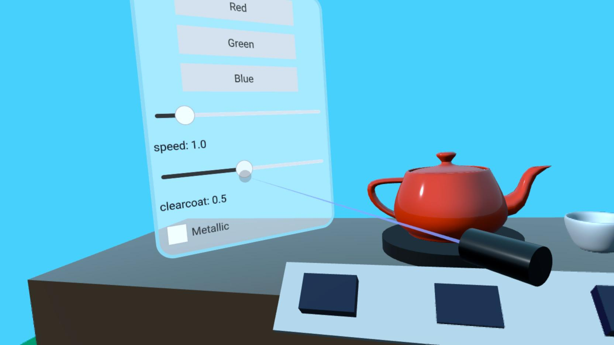

Qt Quick 3D - XR Simple Input Example
Demonstrates controller input in Qt Quick 3D XR.

This example shows how to use the low-level input APIs in Qt Quick 3D XR to interact with 2D and 3D objects in the scene. It follows the basic structure of the xr_simple example.
Controller Input
In this example, we do ray picking from the position of the XrController:
XrController { id: rightController controller: XrController.RightController poseSpace: XrController.AimPose property QtObject hitObject onRotationChanged: { const pickResult = xrView.rayPick(scenePosition, forward) if (pickResult.hitType !== PickResult.Null) { pickRay.hit = true pickRay.length = pickResult.distance hitObject = pickResult.objectHit cursorSphere.position = pickResult.scenePosition cursorSphere.visible = true } else { pickRay.hit = false pickRay.length = 50 hitObject = null cursorSphere.visible = false } } Node { id: pickRay property real length: 50 property bool hit: false Model { eulerRotation.x: -90 scale: Qt.vector3d(0.005, pickRay.length/100, 0.005) source: "#Cone" materials: PrincipledMaterial { baseColor: rightTrigger.pressed ? "#99aaff" : "#cccccc" lighting: PrincipledMaterial.NoLighting } opacity: 0.8 } } Node { z: 5 Model { eulerRotation.x: 90 scale: Qt.vector3d(0.05, 0.10, 0.05) source: "#Cylinder" materials: PrincipledMaterial { baseColor: "black" roughness: 0.2 } } } }
This performs the following functions:
- If we hit anything, we change the length of the
pickRayto so it touches the thing we hit. ThepickRayis a semi-transparent cone (a tapered cylinder) that shows where the user is aiming. We also movecursorSphereto the point where the ray hits. (cursorSphereis a semi-transparent sphere which is a child of the XrView). - We set the property
hitObjectto the object that we hit.
We also use a black cylinder as a generic representation of the controller.
For this example, we have made a simple 3D push button in the file ExampleButton.qml. (The details of how the button works are not explained here.) We create an XrInputAction to react to trigger presses:
XrInputAction { id: rightTrigger hand: XrInputAction.RightHand actionId: [XrInputAction.TriggerPressed, XrInputAction.TriggerValue, XrInputAction.IndexFingerPinch] onTriggered: { const button = rightController.hitObject as ExampleButton if (button && button !== panel.activeButton) { panel.activeButton = button } } }
The rightTrigger action reacts to several different IDs in order to support both hand tracking and different types of controllers. When the action is triggered, it checks if the hitObject we set above is of the type ExampleButton. In that case, the button is activated.
To allow a 3D controller to interact with 2D content, we need to add an XrVirtualMouse to map between them:
XrInputAction { id: rightThumbstickX hand: XrInputAction.RightHand actionId: [XrInputAction.ThumbstickX] } XrInputAction { id: rightThumbstickY hand: XrInputAction.RightHand actionId: [XrInputAction.ThumbstickY] } XrVirtualMouse { view: xrView source: rightController leftMouseButton: rightTrigger.pressed scrollWheelX: rightThumbstickX.value scrollWheelY: rightThumbstickY.value }
First we add two more actions to detect horizontal and vertical thumbstick position. Then we create an XrVirtualMouse, using the XrController as a position source. We use the rightTrigger action we made earlier to generate mouse presses/releases and use the thumbstick actions to generate mouse wheel events.
Finally, we add some haptic feedback when the pickRay hits an object:
XrHapticFeedback { controller: XrHapticFeedback.RightController condition: XrHapticFeedback.RisingEdge trigger: pickRay.hit hapticEffect: XrSimpleHapticEffect { amplitude: 0.5 duration: 30 frequency: 3000 } }
The haptic effect will trigger each time the pickRay.hit property goes from false to true.
XrItem
The normal way to embed 2D user interfaces in 3D scenes also works in XR, but since the unit size is one centimeter, those user interfaces will have to be scaled to be useful. The XrItem type provides a convenient way to do the scaling automatically by setting the physical size of the 3D item and the logical size of the 2D surface.
XrItem { width: 75 height: 100 x: -100 y: height + table.height + 5 z: 40 eulerRotation.y: 45 color: "transparent" contentItem: Rectangle { color: Qt.rgba(1, 1, 1, 0.5) border.width: 5 border.color: "lightblue" height: 400 width: 300 radius: 25 ... } }
We position the XrItem in three dimensions and set it to be 75 cm wide and 100 cm tall. Then add a rectangle as a content item, and set it to be 300 x 400 units. The rest of the Qt Quick UI elements are added as children of the rectangle in the normal way and are not shown here. The 2D content is automatically scaled so it fills the XrItem.